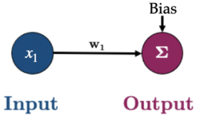

572 Quiz 1 CS
Rounding Errors in Programming
- Infinite amount of numbers but finite amount of bits to represent them
- These small errors will accumulate and cause problems
Why is this relevant in ML?
- large datasets with millions of params
- small errors can accumulate and cause problems
Binary Numbers and Integers
- Binary numbers are represented as a sum of powers of 2
- e.g. 104 in binary is 1101000 = \(1(2^6) + 1(2^5) + 0(2^4) + 1(2^3) + 0(2^2) + 0(2^1) + 0(2^0) = 64 + 32 + 8 = 104\)
- Unsigned Integers: \(2^n - 1\) is the largest number that can be represented with n bits
- e.g. 8 bits can represent 0 to 255
np.iinfo(np.uint8)gives the min and max values
- Signed Integers: \(2^{n-1} - 1\) is the largest positive number that can be represented with n bits
- \(-2^{n-1}\) is the smallest negative number that can be represented with n bits
- e.g. 8 bits can represent -128 to 127 (0 is included in the positive numbers)
- 1 bit is used to represent the sign
np.iinfo(np.int8)gives the min and max values
Fractional Numbers in Binary
- 14.75 in binary is 1110.11
| 2^3 | 2^2 | 2^1 | 2^0 | 2^-1 | 2^-2 |
|---|---|---|---|---|---|
| 1 | 1 | 1 | 0 | 1 | 1 |
| 8 | 4 | 2 | 0 | 0.5 | 0.25 |
$ 8 + 4 + 2 + 0 + 0.5 + 0.25 = 14.75 $
Fixed Point Numbers
- We typically have a fixed number of bits to represent the fractional part
- e.g. 8 bits total, 4 bits for the integer part and 4 bits for the fractional part
- max value is 15.9375 (\(2^3 + 2^2 + 2^1 + 2^0 + 2^{-1} + 2^{-2} + 2^{-3} + 2^{-4}\))
- overflow if try a higher value
- min value (bigger than 0) is 0.0625 (\(2^{-4}\))
- or precision of 0.0625 (any less => underflow)
- max value is 15.9375 (\(2^3 + 2^2 + 2^1 + 2^0 + 2^{-1} + 2^{-2} + 2^{-3} + 2^{-4}\))
*Floating Point Numbers*
- Rather than having a fixed location for the binary point, we let it “float” around.
- like how we write 0.1234 as 1.234 x 10^-1
- Format: \[(-1)^S \times 1. M \times 2^E\]
- S is the sign bit
- M is the mantissa, always between 1 and 2 (1.0 is implied)
- E is the exponent
Float 64 (double precision) 
Float 32 (single precision) 
Rounding Errors and Spacing
Spacing
- The spacing changes depending on the floating point number (because of the exponent)
Ways to calculate the spacing
import numpy as np
np.spacing(1e16) # 1.0
np.nextafter(1e16, 2e16) - 1e16 # 1.0Examples
1.0 + 2.0 + 3.0 == 6.0True0.1 + 0.2 == 0.3False- 0.1, 0.2, and 0.3 are not exactly representable in binary
1e16 + 1 == 1e16True- 1 is less than the spacing, so it is rounded back
1e16 + 2.0 == 1e16False- 2.0 is greater than the spacing, so it is rounded up
1e16 + 1.0 + 1.0 == 1e16True- 1.0 is less than the spacing, so it is rounded back, then 1.0 is added, which is less than the spacing, so it is rounded back again
Optimization
- In ML, we want to minimize a loss function
- typically a sum of losses over the training set
- Can think of ML as a 3 step process:
- Choose model: controls space of possible functions that map X to y
- Choose loss function: measures how well the model fits the data
- Choose optimization algorithm: finds the best model
Optimization Terminology
- Optimization: process to min/max a function
- Objective Function: function to be optimized
- Domain: set to search for optimal value
- Minimizer: value that minimizes the objective function
Loss Function
Common loss function is MSE (mean squared error):
\[L(w) = \frac{1}{n} \sum_{i=1}^n (\hat{y}_i - y_i)^2\]
Using a simple linear regression model \(y = w_0 + w_1x\), we can rewrite the loss function as:
\[L(w) = \frac{1}{n} \sum_{i=1}^n ((w_0 + w_1x_i) - y_i)^2\]
So optimization is finding the values of \(w_0\) and \(w_1\) that minimize the loss function, \(L(w)\).
In vector format:
\[\text{MSE} = \mathcal{L}(\mathbf{w}) = \frac{1}{n}\sum^{n}_{i=1}(\mathbf{x}_i \mathbf{w} - y_i)^2\]
In full-matrix format
\[\text{MSE} = \mathcal{L}(\mathbf{w}) = \frac{1}{n}(\mathbf{X} \mathbf{w} - \mathbf{y})^T (\mathbf{X} \mathbf{w} - \mathbf{y}) \]
Notation
\[ \mathbf{y}= \left[ \begin{array}{c} y_1 \\ \vdots \\ y_i \\ \vdots\\ y_n \end{array} \right]_{n \times 1}, \quad \mathbf{X}= \left[ \begin{array}{c} \mathbf{x}_1 \\ \vdots \\ \mathbf{x}_i \\ \vdots\\ \mathbf{x}_n \end{array} \right]_{n \times d} = \left[\begin{array}{cccc} x_{11} & x_{12} & \cdots & x_{1 d} \\ \vdots & \vdots & \ddots & \vdots \\ x_{i 1} & x_{i 2} & \cdots & x_{i d}\\ \vdots & \vdots & \ddots & \vdots \\ x_{n 1} & x_{n 2} & \cdots & x_{n d} \end{array}\right]_{n \times d}, \quad \mathbf{w}= \left[ \begin{array}{c} w_1 \\ \vdots\\ w_d \end{array} \right]_{d \times 1} \]
- \(n\): number of examples
- \(d\): number of input features/dimensions
The goal is to find the weights \(\mathbf{w}\) that minimize the loss function.
Formulas:
\[\mathbf{y} = \mathbf{X} \mathbf{w}\]
\[\hat{\mathbf{y}_i} = \mathbf{w}^T \mathbf{x}_i\]
Gradient Descent
One of the most important optimization algorithms in ML
Iterative optimization algorithm
Steps:
start with some arbitrary \(\mathbf{w}\)
calculate the gradient using all training examples
use the gradient to adjust \(\mathbf{w}\)
repeat for \(I\) iterations or until the step-size is sufficiently small
Cost: \(O(ndt)\) for t iterations, better than brute force search \(O(nd^2 + d^3)\)
\[w_{t+1} = w_t - \alpha \nabla= L(w_t)\]
- \(w_t\): current value of the weights
- \(\alpha\): learning rate
- \(\nabla L(w_t)\): gradient of the loss function at \(w_t\)
GD with a Single Parameter
- Loss function: \(L(w) = \frac{1}{n} \sum_{i=1}^n (\hat{y}_i - y_i)^2\)
- Gradient: \(\nabla L(w) = \frac{d}{dw} L(w) = \frac{2}{n} \sum_{i=1}^n x_{i1} (x_{i1} w_1 - y_i)\)
- Or in Matrix form: \(\nabla L(w) = \frac{2}{n} \mathbf{X}^T (\mathbf{X} \mathbf{w} - \mathbf{y})\)
GD with Multiple Parameters
Need to scale for the contour plot to be more “round”
- better for gradient descent
In real life, contour plots are not so nice
General process

- Initialization: Start with an initial set of parameters, often randomly chosen.
- Forward pass: Generate predictions using the current values of the parameters. (E.g., \(\hat{y_i} = x_{1}w_1 + Bias\) in the toy example above)
- Loss calculation: Evaluate the loss, which quantifies the discrepancy between the model’s predictions and the actual target values.
- Gradient calculation: Compute the gradient of the loss function with respect to each parameter either on a batch or the full dataset. This gradient indicates the direction in which the loss is increasing and its magnitude.
- Parameter Update: Adjust the parameters in the opposite direction of the calculated gradient, scaled by the learning rate. This step aims to reduce the loss by moving the parameters toward values that minimize it.
Other Optimization Algorithms
- Use
minimizefunction fromscipy.optimize
from scipy.optimize import minimize
def mse(w, X, y):
"""Mean squared error."""
return np.mean((X @ w - y) ** 2)
def mse_grad(w, X, y):
"""Gradient of mean squared error."""
n = len(y)
return (2/n) * X.T @ (X @ w - y)
out = minimize(mse, w, jac=mse_grad, args=(X_scaled_ones, toy_y), method="BFGS")
# jac: function to compute the gradient (optional)
# - will use finite difference approximation if not provided- Other methods:
BFGS: Broyden–Fletcher–Goldfarb–Shanno algorithmCG: Conjugate gradient algorithmL-BFGS-B: Limited-memory BFGS with bounds on the variablesSLSQP: Sequential Least SQuares ProgrammingTNC: Truncated Newton algorithm
Stochastic Gradient Descent
- Instead of updating our parameters based on a gradient calculated using all training data, we simply use one of our data points (the \(i\)-th one)
Gradient Descent
Loss function:
\[\text{MSE} = \mathcal{L}(\mathbf{w}) = \frac{1}{n}\sum^{n}_{i=1} (\mathbf{x}_i \mathbf{w} - y_i)^2\]
Update procedure:
\[\mathbf{w}^{j+1} = \mathbf{w}^{j} - \alpha \nabla_\mathbf{w} \mathcal{L}(\mathbf{w}^{j})\]
Stochastic Gradient Descent
Loss function:
\[\text{MSE}_i = \mathcal{L}_i(\mathbf{w}) = (\mathbf{x}_i \mathbf{w} - y_i)^2\]
Update procedure: \[\mathbf{w}^{j+1} = \mathbf{w}^{j} - \alpha \nabla_\mathbf{w} \mathcal{L}_i(\mathbf{w}^{j})\]
Mini-batch Gradient Descent
| Gradient Descent | Stochastic Gradient Descent |
|---|---|
| Use all data points | Use one data point |
| Slow | Fast |
| Accurate | Less Accurate |
- Mini-batch Gradient Descent is a (in-between) compromise between the two
- Instead of using a single data point, we use a small batch of data points d
Mini-batch Creation
- Shuffle and divide all data into \(k\) batches, every example is used once
- Default in PyTorch
- An example will only show up in one batch
- Choose some examples for each batch without replacement
- An example may show up in multiple batches
- The same example cannot show up in the same batch more than once
- Choose some examples for each batch with replacement
- An example may show up in multiple batches
- The same example may show up in the same batch more than once
Terminology
Assume we have a dataset of \(n\) observations (also known as rows, samples, examples, data points, or points)
Iteration: each time you update model weights
Batch: a subset of data used in an iteration
Epoch: One full pass through the dataset to look at all \(n\) observations
In other words,
- In GD, each iteration involves computing the gradient over all examples, so
\[1 \: \text{iteration} = 1 \: \text{epoch}\]
- In SGD, each iteration involves one data point, so
\[n \text{ iterations} = 1 \: \text{epoch}\]
- In MGD, each iteration involves a batch of data, so
\[ \begin{align} \frac{n}{\text{batch size}} \text{iterations} &= 1 \text{ epoch}\\ \end{align} \]
*Note: nobody really says “minibatch SGD”, we just say SGD: in SGD you can specify a batch size of anything between 1 and \(n\)
Neural Networks
- Models that does a good job of approximating complex non-linear functions
- It is a sequence of layers, each of which is a linear transformation followed by a non-linear transformation
Components
- Node (or neuron): a single unit in a layer
- Input layer: the features of the data
- Hidden layer: the layer(s) between the input and output layers
- Output layer: the prediction(s) of the model
- Weights: the parameters of the model
- Activation function: the non-linear transformation (e.g. ReLU, Sigmoid, Tanh, etc.)

X : (n x d), W : (h x d), b : (n x h), where h is the number of hidden nodes b is actually 1 x hs, but we can think of it as n x hs because it is broadcasted
\[\mathbf{H}^{(1)} = \phi^{(1)} (\mathbf{X}\mathbf{W}^{(1)\text{T}} + \mathbf{b}^{(1)})\]
\[\mathbf{H}^{(2)} = \phi^{(2)} (\mathbf{H}^{(1)}\mathbf{W}^{(2)\text{T}} + \mathbf{b}^{(2)})\]
\[\mathbf{Y} = (\mathbf{H}^{(2)}\mathbf{W}^{(3)\text{T}} + \mathbf{b}^{(3)})\]
- In a layer, \[\text{ num of weights} = \text{num of nodes in previous layer} \times \text{num of nodes in current layer}\]
\[\text{num of biases} = \text{num of nodes in current layer}\]
\[\text{num of parameters} = \text{num of weights} + \text{num of biases}\]
Activation Functions

Finding gradient of loss in a neural network
- Backpropagation: a method to calculate the gradient of the loss function with respect to the weights
- Chain rule: a method to calculate the gradient of a function composed of multiple functions
- It is pretty complicated, but PyTorch does it for us
Deep Learning
- Neural networks with > 1 hidden layer
- NN with 1 hidden layer: shallow neural network
PyTorch for Neural Networks
- PyTorch is a popular open-source machine learning library by Facebook based on Torch
- It is a Python package that provides two high-level features:
- Tensor computation (like NumPy) with strong GPU acceleration
- Gradient computation through automatic differentiation
Tensors
- Similar to
ndarrayin NumPy
import torch
# Create a tensor
x = torch.tensor([1, 2, 3, 4, 5]) # int
x = torch.tensor([1, 2, 3, 4, 5.]) # float
x = torch.tensor([[1, 2], [3, 4], [5, 6]])
y = torch.zeros(3, 2)
y = torch.ones(3, 2)
y = torch.rand(3, 2)
# Check the shape, dimensions, and data type
x.shape
x.ndim
x.dtype
# Operations
a = torch.rand(1, 3)
b = torch.rand(3, 1)
a + b # broadcasting
a * b # element-wise multiplication
a @ b # matrix multiplication
a.mean()
a.sum()
# Indexing
a[0,:] # first row
a[0] # first row
a[:,0] # first column
# Convert to NumPy
x.numpy()GPU with PyTorch
# Check if GPU is available
torch.backends.mps.is_available() # mac M chips
torch.cuda.is_available() # Nvidia GPU
# To activate GPU
device = torch.device('mps' if torch.backends.mps.is_available() else 'cpu')
# device = torch.device('cuda' if torch.cuda.is_available() else 'cpu')
x.to('cpu') # move tensor to cpuGradient Computation
- use
backward()to compute the gradient, backpropagation
X = torch.tensor([1.0, 2.0, 3.0], requires_grad=False)
w = torch.tensor([1.0], requires_grad=True) # Random initial weight
y = torch.tensor([2.0, 4.0, 6.0], requires_grad=False) # Target values
mse = ((X * w - y)**2).mean()
mse.backward()
w.gradLinear Regression with PyTorch
- Every NN model has to inherit from
torch.nn.Module
from torch import nn
class linearRegression(nn.Module): # inherit from nn.Module
def __init__(self, input_size, output_size):
super().__init__() # call the constructor of the parent class
self.linear = nn.Linear(input_size, output_size,) # wX + b
def forward(self, x):
out = self.linear(x)
return out
# Create a model
model = linearRegression(1, 1) # input size, output size
# View model
summary(model)
## Train the model
LEARNING_RATE = 0.02
criterion = nn.MSELoss() # loss function
optimizer = torch.optim.SGD(model.parameters(), lr=LEARNING_RATE) # optimization algorithm is SGD
# DataLoader for mini-batch
from torch.utils.data import DataLoader, TensorDataset
BATCH_SIZE = 50
dataset = TensorDataset(X_t, y_t)
dataloader = DataLoader(dataset, batch_size=BATCH_SIZE, shuffle=True)
# Training
def trainer(model, criterion, optimizer, dataloader, epochs=5, verbose=True):
"""Simple training wrapper for PyTorch network."""
for epoch in range(epochs):
losses = 0
for X, y in dataloader:
optimizer.zero_grad() # Clear gradients w.r.t. parameters
y_hat = model(X).flatten() # Forward pass to get output
loss = criterion(y_hat, y) # Calculate loss
loss.backward() # Getting gradients w.r.t. parameters
optimizer.step() # Update parameters
losses += loss.item() # Add loss for this batch to running total
if verbose: print(f"epoch: {epoch + 1}, loss: {losses / len(dataloader):.4f}")
trainer(model, criterion, optimizer, dataloader, epochs=30, verbose=True)Non-linear Regression with PyTorch
- use
torch.nn.Sequentialto create a model
class nonlinRegression(nn.Module):
def __init__(self, input_size, hidden_size, output_size):
super().__init__()
self.main = torch.nn.Sequential(
nn.Linear(input_size, hidden_size), # input -> hidden layer
nn.Sigmoid(), # sigmoid activation function in hidden layer
nn.Linear(hidden_size, output_size) # hidden -> output layer
)
def forward(self, x):
x = self.main(x)
return xCommon Criteria and Optimizers for PyTorch
| Task | Criterion (Loss) | Optimizer |
|---|---|---|
| Regression | MSELoss | SGD |
| Binary Classification | BCELoss | Adam |
| Multi-class Classification | CrossEntropyLoss | Adam |
# criterions
from torch import nn
reg_criterion = torch.nn.MSELoss()
bc_criterion = torch.nn.BCEWithLogitsLoss()
mse_criterion = torch.nn.CrossEntropyLoss()
# optimizers
from torch import optim
reg_optim = torch.optim.SGD(model.parameters(), lr=0.2)
class_optim = torch.optim.Adam(model.parameters(), lr=LEARNING_RATE)